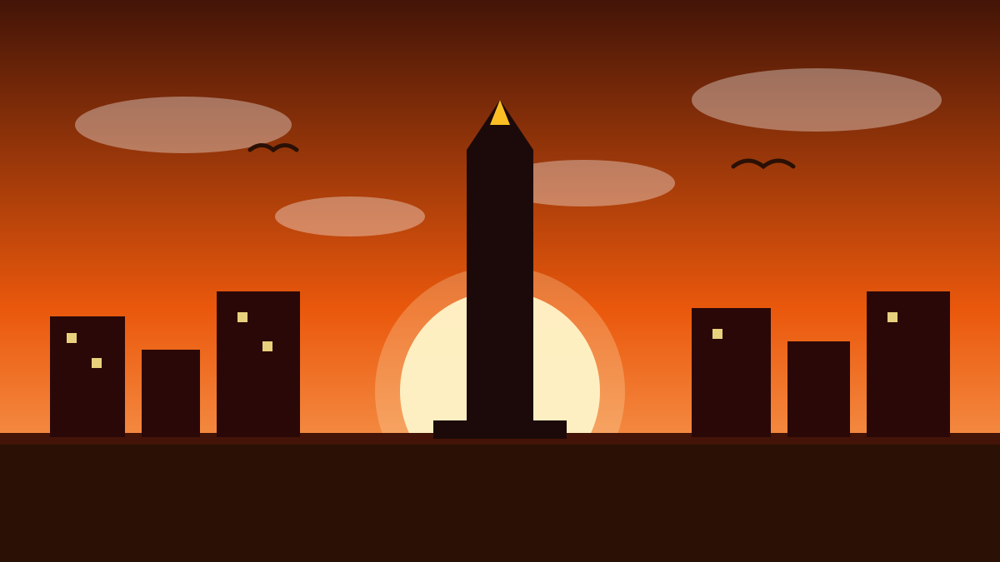

1 / 6

🏛️ NASIONAL
Dua gempa, satu hari, nol tsunami
Sorong diguncang siang, Kodi menyusul malam. Geser buat detailnya →
2 / 6
🌊
Gempa pertama: Sorong M4,2
BMKG mencatat gempa magnitudo 4,2 mengguncang Kota Sorong, Papua Barat Daya, Sabtu (17/10) pukul 15:20:52 WIB.
Pusatnya di laut, 11 km timur laut Kota Sorong, dengan kedalaman 3 km. Getarannya dirasakan di Sorong dengan skala III MMI.
3 / 6
🌙
Gempa kedua: Kodi M4,6
Malamnya, gempa magnitudo 4,6 mengguncang wilayah Kodi-Sumbabaratdaya, Nusa Tenggara Timur, pukul 19:46:17 WIB.
Pusatnya di laut, 49 km barat Kodi, kedalaman 10 km. BMKG menyatakan gempa ini tidak berpotensi tsunami.
4 / 6
📳
Skala III MMI itu seberapa?
MMI III artinya getaran dirasakan nyata di dalam rumah — seperti ada truk besar lewat.
Di gempa Kodi, getaran III MMI dirasakan di Sumba Barat Daya, Kota Bima, Kabupaten Bima, dan Sumbawa.
5 / 6
🧰
Kalau gempa, ingat 3 hal ini
Tetap tenang, lindungi kepala, dan jauhi bangunan yang rawan roboh. Setelah aman, cek kabar terbaru hanya dari BMKG.
Jangan terpancing kabar gempa susulan yang tidak bersumber dari pihak berwenang.
6 / 6
🤔
Efeknya ke lo apa?
Indonesia duduk di Cincin Api Pasifik — gempa itu bukan "kalau", tapi "kapan". Punya tas siaga dan tahu jalur evakuasi itu bukan lebay, itu survival skill.
Punya keluarga atau teman di Sorong dan Sumba? Chat mereka, pastikan kabarnya aman. ❤️